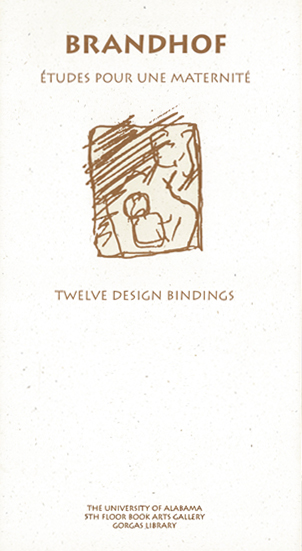

Bibliographie
- Palencia, José Maria. Brandhof : dibujos, cat. exp., Córdoba, Galería Studio 52 (5 - 27 mai 1989), Córdoba, Galería Studio 52, 1989, 8p.
- Gourley, Paula Marie. Brandhof : études pour une maternité : twelve design bindings, cat. exp., Tuscaloosa, 5th floor Book Arts Gallery, Gorgas Library (10 février - 31 mars 1994), Tuscaloosa, University of Alabama, 1994, 8 p. dépliant
- Gourley, Paula Marie. The Art of the Book in the United States : Two Views. In : La reliure actuelle - The contemporary bookbinding - der zeitgenössische bucheinband. Luxembourg : les Amis de la Reliure d’Art, Emile van der Vekene, 1994, p.105-114 ISBN 2.9599999.0.8
- Robert Brandhof : dessins - maquettes - céramiques. Poterie d'Art de Ciboure 1993-1995, cat. exp., Biarritz, Galerie Bouscayrol (13 - 28 juin 2003). Biarritz, Galerie Bouscayrol, 2003, 24p.
- Incau, Lucie d’. Robert Brandhof, la fulgurance du trait. Atlantica, 2006, n°139, p.36-37 ISSN 1.252.719X
- Martin, Otto. Robert Brandhof, la marque de l’essentiel. Revista, 2006, n°12, p.20-26 ISSN 1765-1832
- Robert Brandhof nos atrapa. (Lur), Vitoria-Gasteiz, 2008, n°16, p.44-46
- Bège, Jean-François. Ciboure. Robert Brandhof et la Poterie retrouvée.
Le Festin,
automne 2015, n°95, p.52-59 ISBN 978-2-36062-131-6 - Cazenave, Sabine. Le Dernier Four, une résidence artistique à la Poterie d’Art de Ciboure 1992-1997, un entretien avec Robert Brandhof. In: La Poterie d’Art de Ciboure 1919 - 1995 Ziburuko Arte Eltzegintza. Bordeaux: Éditions Le Festin, Musée Basque et de l’histoire de Bayonne, 2020, p. 168-187. ISBN 978-2-36062-266-5
|
Couverture catalogue Galería Studio 52 |

Couverture catalogue Gorgas Library |
Couverture (Lur)
, 2008, |